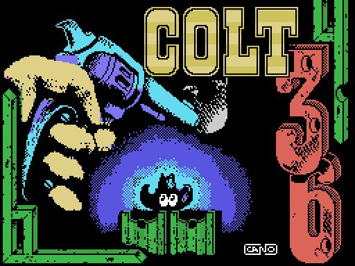
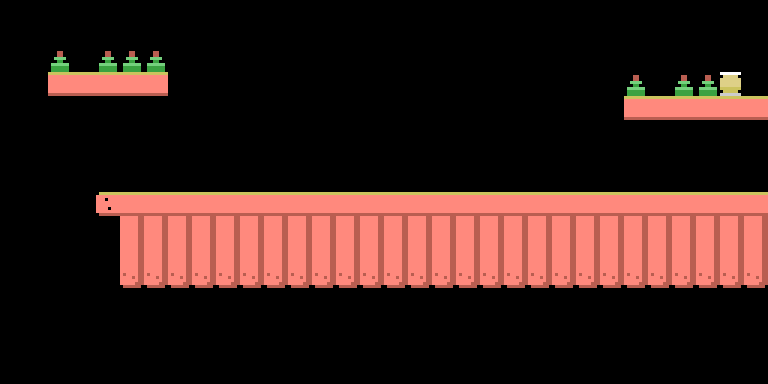
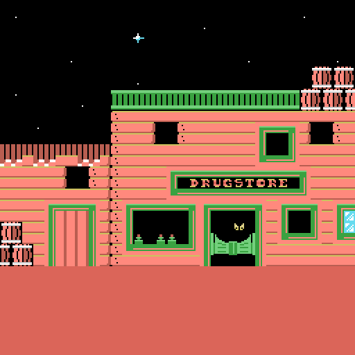

Un desensamblado no termina cuando el código se entiende: termina cuando cada byte de la cinta tiene dueño. En Colt 36 el reparto cierra al 100% —34 239 bytes de contenido, 34 239 explicados—, pero una parte de ese contenido no llega nunca a la pantalla. Conviene separar dos cosas que es facil confundir: hay bytes que no lee nadie, ni una sola instruccion, y hay bytes que si se leen y se copian pero no se ven jamas. Los del sobrante de los mapas son de los segundos, y mas abajo se explica exactamente por que. Sumando solo los trozos que se cuentan aquí salen 3263 bytes muertos; si se añaden los 2048 del área de trabajo y los pellizcos de relleno, son 5456 bytes de 34 239, casi el 16% de la cinta.
El juego es un programa MSX-BASIC tokenizado (guardado ya troceado en códigos internos, no como texto), y el bloque que lo trae reserva detrás del listado 297 bytes en 0x8F5F–0x9087: el área de variables, la tabla donde el intérprete va anotando las variables que el programa crea al ejecutarse. Grabarla en cinta no sirve de nada, y aquí se puede demostrar de tres formas independientes.
La primera: el programa no menciona ni una dirección de ese rango. La segunda: lo grabado se destruye en cuanto el juego crea su primera variable. La tercera es la que más dice. El contenido es 1 byte muerto, 11 bytes de una variable sobrante —una I de doble precisión con valor 37025, con el formato exacto de la tabla del intérprete, reproducido byte a byte en el emulador— y 285 bytes de RAM sin inicializar. Esos 285 siguen la regla «0xFF si el bit 0 de la dirección coincide con su bit 7, y 0x00 si no», que es el contenido de encendido documentado para varias máquinas: la cumplen 282 de 285.
Y como la regla depende de la dirección absoluta, el patrón funciona de huella. Encaja en 282 de los 285 (98,9 %) si el bloque estaba en 0x8000, y solo en 226 (79,3 %) si hubiera estado en 0x83E8, que es donde la cinta lo carga. O sea: en la máquina del programador el juego ya vivía en 0x8000, y el 0x83E8 es un desvío para no pisar al cargador. Basura que dice dónde se hizo el juego.

El bloque de la ilustración de carga reparte 6144 bytes de dibujo + 768 de color + 88 bytes que no lee nadie + 95 de código + 5 ceros. Los 88 cumplen la misma regla de RAM recién encendida, los 88 de 88: el BSAVE con que se grabó el bloque cogió un rango un poco más ancho que los datos. Comprobado además en el emulador con un punto de observación sobre esas direcciones: cero lecturas durante el pintado.
En 0xD400–0xD5FF hay 512 bytes con formato de tablero: números de casilla, 32 por fila. Las doce primeras filas dibujan una escena coherente —dos plataformas con botellas y una empalizada larga—, con solo ocho dibujos distintos y ocho casillas de las que se rompen al dispararles (los dibujos 72 y 73). Las cuatro últimas filas, 128 bytes, son ceros.
Nadie lo lee. En todo el listado no aparece ni una constante entre 0xD400 y 0xD5FF, y las copias vecinas se quedan justo fuera: la portada son 768 bytes desde 0xD000 (acaban en 0xD300), el marcador 256 desde 0xD300 (acaban exactamente en 0xD400), y lo siguiente que toca alguien está ya en 0xD600. Un decorado descartado que se quedó dentro del fichero.

Esta imagen no ha existido nunca en una pantalla. Está dibujada a partir de esos 512 bytes con la tabla de dibujos del propio juego, que es lo que la convierte en algo más que una curiosidad: si el reparto del bloque estuviera mal, de ahí saldría ruido. Sale una escena montada, con sus botellas colocadas sobre los estantes y su empalizada alineada. Alguien la dibujó y luego decidió no usarla.
Los escondites de los bandidos viven en 0xD900: diez por nivel, cuatro bytes cada uno, cuarenta bytes por nivel, 160 en total. El programa los indexa con K%=INT(RND(-TIME)*10)*4+&HD900+40*(N%-1), así que la dirección más alta que llega a leer es 0xD99F.
Los 64 bytes siguientes, 0xD9A0–0xD9DF, son una copia literal de las formas y los colores de las casillas 170 a 173: comprobado byte a byte contra las tablas de dibujos de 0xC000 y de color de 0xC800. Es el bloque de 2×2 justo anterior al primer modelo de bandido, que empieza en la casilla 174. Un recorte de las tablas grandes, pegado ahí y olvidado.
En 0xD600 hay 512 bytes, todos con el dibujo 255, la casilla vacía. La línea 30 los usa para borrar la zona de juego antes de anunciar el nivel: HL=&HD600 : BC=32 : FOR DE=6144 TO 6656 STEP 32. Copia 32 bytes, siempre los mismos, a diecisiete filas seguidas de la pantalla; el origen no cambia nunca. Los 480 bytes de 0xD620 a 0xD7FF son más de lo mismo y no los lee nadie.
El área de trabajo del nivel ocupa 0xDA00–0xE1FF y detrás vienen 256 bytes a cero, hasta que en 0xE300 empieza la primera rutina en código máquina. Son relleno para que esa rutina caiga en dirección redonda. Que no se vean se sigue del tope de scroll de la línea 610: para los niveles 3 y 4 el tope es 0xE000 y la ventana de 512 bytes acaba en 0xE1FF, el último byte del área de trabajo. Ni uno más.
Aquí toca decir exactamente qué se sabe y qué no.
El sobrante de los mapas 1 y 2 (1536 bytes). Estos no son bytes que nadie toque: se leen, y se copian. Cada decorado es un tablero de 32×64, 2048 bytes, y la linea 33 se lo lleva entero al área de trabajo de una sentada, con HL=&HA000+2048*(N%-1) : DE=&HDA00 : BC=2048 y un USR2, que es un LDIR pelado. O sea que los 1024 bytes de 0xA400–0xA7FF viajan con los demás y acaban en 0xDE00–0xE1FF. Pero esa misma línea 610 pone el tope en 0xDC00 para el nivel 1 y en 0xDE00 para el 2, con lo que la última ventana visible acaba en 0xDDFF y en 0xDFFF: 32 filas y 48 filas. Lo que queda fuera es, al byte, 0xA400–0xA7FF (1024 B) y 0xAE00–0xAFFF (512 B). Y ahí se quedan: la ventana visible acaba en 0xDDFF, un solo byte antes de donde empiezan. Se copian, ocupan sitio en memoria durante toda la partida, y no se ven nunca.

Qué son, no. Se ha descartado que sean mapa, color, música o copia de cualquier otra parte de la cinta. Se ha descartado que sean PCM (sonido digitalizado, una muestra por byte): la correlación entre bytes vecinos sale −0,27, y una señal muestreada de verdad da +0,99. Se ha descartado que sean una tabla de periodos de notas: leídos como palabras de 16 bits, la desviación respecto a la escala templada es de 0,244 semitonos, que es lo que da el azar, mientras que la tabla de periodos real del juego da 0,090.
Y hay dos descartes que merecen su propia medida, porque cierran de golpe familias enteras de hipótesis.
No son código, de ninguna máquina. No hace falta ir CPU por CPU: basta con contar cuántos valores de byte distintos usan. Los 1566 usan 60. Trescientos bytes de código Z80 de esta misma cinta usan 67, y un programa necesita muchos más conforme crece, porque tiene que nombrar registros, saltos y constantes. La consecuencia es que faltan instrucciones que ningún programa puede no tener: en los 1566 bytes hay **cero CALL (0xCD), cero RET (0xC9), cero prefijos 0xED, cero JR, cero DJNZ y cero LD BC,nn**. Ninguna. Y como es una cuenta sobre el conjunto de bytes, vale para cualquier alineamiento y para cualquier procesador de ocho bits: si el opcode no está en el bloque, no está en ninguna lectura del bloque.
No son un dibujo, en ningún ancho. Aquí la medida es la longitud media de racha: cuántos píxeles seguidos del mismo color hay, leyendo los bits en fila. Un dibujo, por dentado que sea, tiene rachas más largas que el azar, porque las cosas dibujadas son continuas. Los bytes de la cinta lo confirman: los dibujos del juego dan 3,91 y el mapa del nivel 1 da 3,82, contra los 2,00 exactos del azar. Los sospechosos dan 1,63: alternan más que unos bytes aleatorios. Y como la racha horizontal no depende del ancho de la línea, esto descarta a la vez todos los anchos posibles.
La cola de 30 bytes (0xE323–0xE340). Van detrás del último RET, hasta el final que declara la cabecera:
16 E9 16 69 16 E9 16 E9 16 49 16 49 04 40 00 40 00 41 00 41 04 41 00 41 00 41 00 69 00 41
Quince parejas. El primer byte es siempre 0x16, 0x04 o 0x00; el segundo toma solo cinco valores. No son código alcanzable, ni dibujos, ni color, ni mapa, ni música, y la secuencia no aparece en ningún otro sitio de la cinta, ni siquiera buscando solo los seis primeros bytes.
Descartar cosas no es el único resultado. Estos bytes tienen una estructura que se mide, y una bastante llamativa. Sobre los 1536 de los decorados:
Y la cola de 30 bytes, que se había tratado como un asunto aparte, resulta tener la misma firma: alternancia estricta, alfabetos de posición par e impar sin un solo valor en común, bits fijos complementarios en cada paridad. Con 30 bytes eso podría ser casualidad y hay que decirlo; con 1536, no.
Esto es lo más lejos que se ha llegado, y es la pista que hay que seguir. Lo que decide qué byte hay en cada sitio no parece ser un contenido, sino la dirección de memoria en la que está. Tres medidas independientes apuntan a lo mismo:
Y de ahí sale, por fin, la explicación de por qué 0xA600–0xA7FF y 0xAE00–0xAFFF son idénticos byte a byte: están separados por 0x800, que es múltiplo de 128, así que tienen los mismos bits bajos de dirección. No hacía falta que nadie copiara nada.
Aquí es donde hay que frenar. La conclusión natural sería «es RAM sin inicializar, como los otros restos», y esta cinta permite comprobarlo, porque ya tiene dos zonas identificadas como tal: los 88 bytes de la pantalla de carga y los 285 del área de variables. Las dos cumplen la regla «0xFF si el bit 0 de la dirección coincide con el bit 7, y 0x00 si no». Contando bits, el encaje es este:
los 88 bytes de la pantalla de carga 100,0 % los 285 del area de variables 99,3 % --------------------------------------------- LOS SOSPECHOSOS de 0xA400 47,7 % los de 0xAE00 46,4 % --------------------------------------------- el mapa del nivel 1, un dato de verdad 50,3 % la tabla de dibujos 50,4 %
Los sospechosos encajan igual que un dato cualquiera, o sea nada. Si fueran la misma memoria sin inicializar de la misma máquina, tendrían que parecerse a las otras dos, y no se parecen. Así que lo que hay es esto y no más: unos bytes cuyo contenido depende de la dirección —lo cual ningún formato de datos hace— pero que no son el patrón de encendido que sí se ha identificado en el resto de la cinta. Puede que sean memoria sin inicializar de otra clase, de otro chip o de otro momento. Puede que sean otra cosa. Medido está lo que está.
Esta es la única parte del trabajo que sigue abierta, así que se publica como lo que es: un cartel.
*-------------------------------------------------------------*
| |
| S E B U S C A N |
| VIVOS O MUERTOS |
| |
| 1 5 6 6 B Y T E S |
| |
| Vistos por última vez en una cinta de Topo Soft, 1987, |
| en las direcciones 0xA400, 0xAE00 y 0xE323. Llevan |
| cuarenta años ahí sin que nadie sepa a qué se dedican. |
| |
| SEÑAS PARTICULARES |
| - solo 60 valores de byte distintos en 1566 |
| - el bit 1 encendido en los 768 bytes de posicion par |
| - cada bit con su polaridad atada a la paridad de la |
| dirección: el bit 1 la cumple al 99,2%, el 6 al 18,8% |
| - los 8 únicos 0xFF en dirección impar caen los ocho |
| donde los 7 bits bajos están todos a uno |
| - seis bloques de 256 bytes que solo se diferencian |
| en el 9% de sus bits (el decorado de al lado: 54%) |
| |
| NO SON código de ninguna CPU (60 valores de byte, cero |
| CALL y cero RET en 1566) - dibujo de ningun |
| ancho (racha 1,63, por debajo del azar 2,00) - |
| mapa - color - música - sonido digitalizado - |
| tabla de notas - copia de otra parte de la cinta |
| - la RAM de encendido que sí trae esta cinta |
| (encajan al 47,7%; las otras zonas al 99-100%) |
| |
| SE LES BUSCA VIVOS: que alguien diga qué son. |
| SE LES ACEPTA MUERTOS: un «no es X, y esta es la |
| medida que lo descarta» también vale, y se publica. |
| |
| RECOMPENSA tu nombre en este repositorio, al lado de |
| los bytes que hayas identificado |
| |
*-------------------------------------------------------------*Para poder mirarlos no hace falta nada: están abajo, enteros. No son código —eso está medido más arriba— ni el juego los ejecuta ni los enseña nunca, así que publicarlos no reconstruye nada; son sencillamente el objeto del que va esta página. Los 512 del segundo trozo se listan también aunque sean idénticos a la segunda mitad del primero, para que estén los 1566 sin tener que fiarse de nadie.
0xA400-0xA7FF (1024 bytes, el sobrante del decorado del nivel 1)
A400 D2 F5 DA F4 9A FC 9A F4 DB D4 DB 54 DB F4 9B D4
A410 DB D4 DB 54 FB D4 BB D4 DB 54 DB 54 BB 54 BB D4
A420 FB 54 DB 44 BB 44 BB 54 DB 54 CB 54 AB 54 AB 54
A430 CB 54 8B 54 AB 54 AB 54 8B 54 8B 54 8B 54 8A D4
A440 FB F4 FB F4 DB D4 DB D4 FB 54 FB D4 FB D4 DB D4
A450 FB D4 FB D4 DB D4 FB 54 FB 54 FB 54 FB 54 DB D4
A460 FB 54 BB 50 DB 44 DB 50 BB 40 9B 44 DB 40 DA 40
A470 8A 40 8A 50 8A C0 8A 40 8A 40 8A 54 8A 54 8A FF
A480 9E F5 8A FC 9A FC 8A FC DB 54 8B 54 BB 74 BB 54
A490 CB 54 EB 44 BF 54 AB 54 AB 44 AB 54 AB 54 AB 54
A4A0 AB 44 AB 44 BB 44 AB 44 8B 44 AB 44 AB 44 AB 54
A4B0 AB 44 8B 54 AB 44 AB 14 AB 54 8B 14 AB 14 8A DC
A4C0 AB 7C AB 7C FB 54 EB 54 BB 54 BB 54 AB 54 AB 54
A4D0 BF 54 AB 54 AB 54 AB 44 AB 54 AB 54 AB 54 8F 44
A4E0 BF 04 BB 00 AF 44 AF 40 AF 00 AB 04 AF 04 8A 40
A4F0 AA 00 8A 00 8A 44 8A 40 8A 00 8A 04 8A 54 8A FF
A500 D6 F5 DB F4 D2 F5 DB F5 DB D4 DB 54 DB F4 DB 54
A510 DB D4 DB 54 FB D4 FB D4 DB 54 DB 54 FB 54 FB D4
A520 FB 54 DB 54 FB 54 FB 54 DB 54 DB 54 FB 54 CB 54
A530 DB 54 CB 54 AB 54 AB 54 CB 54 CB 54 8B 54 8B D4
A540 FB F5 DB D5 DB D4 DB D4 FB 54 FB D4 FB D4 DB D4
A550 FB D4 FB D4 DB D4 DB 54 FB 54 FB 54 FB 54 DF D4
A560 FF 54 DB 50 DF 54 DB 50 FB 44 DB 44 DB 44 DB 40
A570 DB 50 DB 54 DA 44 D3 54 CB 40 C3 54 C2 54 C2 FF
A580 DE F5 9E F4 9E 7C 9F FC DF 74 DF 54 BF 74 BF 54
A590 DF 54 FF 54 BF 54 BF 54 BF 54 BF 54 BF 54 BF 54
A5A0 BF 54 BF 44 BF 54 BF 54 BB 54 BB 54 BB 54 AB 54
A5B0 AB 54 AB 54 AB 54 AB 54 AB 54 8B 14 AB 14 8A 54
A5C0 BF 7C BF 74 FF 54 FF 54 BF 54 BF 54 FF 54 BF 54
A5D0 BF 74 BF 54 FF 54 BF 54 BB 54 BB 54 FF 54 9F 54
A5E0 BF 54 BF 54 FF 54 BF 54 BF 04 BF 44 BF 44 9E 44
A5F0 BF 44 BA 14 9E 44 8E 54 9B 44 8A 54 8A 54 8A FF
A600 96 F5 9A F4 9A FD 9B F4 9B D4 9B 54 9B 74 9B 54
A610 9B D4 9B 54 BB D4 BB 54 8B 54 9B 54 9B 54 BB 54
A620 9B 54 9B 44 BB 54 BB 54 8B 44 8B 54 AB 54 8B 54
A630 8B 54 8B 54 AB 54 8B 54 8B 54 8B 54 8B 14 8A D4
A640 9B 74 9B 54 9B D4 9B 54 BB 54 BB 54 9B 54 9B 54
A650 BB 54 9B 54 9B 54 9B 54 BB 54 BB 54 8B 54 9F 54
A660 9F 54 9B 50 9F 44 9B 50 9B 04 9B 44 9B 44 9A 40
A670 8B 40 8B 14 8A 44 8A 54 8B 40 8A 54 8A 54 82 FF
A680 DE 75 9E 74 9E 7D 9F 7C DF 74 BF 54 BF 74 BF 54
A690 BF 54 FF 54 BF 54 BF 54 BF 54 BF 54 BF 54 BF 54
A6A0 BF 54 BF 44 BF 44 BB 54 BB 44 AB 54 AB 54 AB 54
A6B0 AB 54 AB 54 AB 54 AB 14 AB 54 8B 14 AB 14 AB 54
A6C0 BF 7C BF 74 FF 74 FF 54 BF 54 BF 74 BF 54 BF 54
A6D0 BF 74 BB 54 BF 54 BF 54 BB 54 BB 54 BF 54 BF 54
A6E0 BF 14 BF 14 BF 44 BF 54 BF 04 BF 04 BF 04 9F 44
A6F0 AF 04 BB 04 8A 44 8E 54 8B 04 8A 14 8A 54 8A FF
A700 D6 F4 9E F4 9A 7C 9E 74 DF 54 9F 54 9F 74 9F 54
A710 DF 54 DF 54 BF 54 BF 54 CF 44 8F 54 BF 54 BB 54
A720 BF 44 8F 44 BF 44 BB 54 8B 44 8B 44 AB 44 8B 54
A730 8B 44 8B 54 AB 44 AB 54 8B 54 8A 54 8B 54 0A 54
A740 BF 74 BB 54 DE 54 DA 54 BB 54 BB 54 FE 54 9A 54
A750 BF 54 BB 54 DA 54 CB 54 BB 54 BB 54 AB 54 9E 54
A760 BE 44 BF 44 9E 44 9E 44 BE 44 8A 44 9E 44 0E 44
A770 8A 44 8A 44 8A 44 0A 44 8A 44 8A 54 8A 54 8A FF
A780 9E D4 9E DC 9E FC 9E FC 9F 54 9F 54 9F 54 9F 54
A790 9F 54 9F 44 BF D4 BF 54 8F 44 8F 54 BF 14 BF 14
A7A0 9F 04 8F 04 BF 04 BF 14 8B 04 8B 04 AB 04 8B 14
A7B0 8B 44 8B 14 AB 04 8B 14 8B 14 8B 14 8B 14 8A 9C
A7C0 BF 5C 9F 54 9F 54 9F 54 BF 54 BF 14 9F 54 9F 54
A7D0 BF 54 BF 54 9F 54 8F 54 BB 14 BB 14 8F 54 9F 44
A7E0 BF 04 9F 04 9F 04 9F 04 9F 04 9F 04 9F 04 8E 04
A7F0 8E 04 8A 04 8E 04 8E 04 8A 04 8A 04 8A 14 8A FF
0xAE00-0xAFFF (512 bytes, el del nivel 2; identico a 0xA600-0xA7FF)
AE00 96 F5 9A F4 9A FD 9B F4 9B D4 9B 54 9B 74 9B 54
AE10 9B D4 9B 54 BB D4 BB 54 8B 54 9B 54 9B 54 BB 54
AE20 9B 54 9B 44 BB 54 BB 54 8B 44 8B 54 AB 54 8B 54
AE30 8B 54 8B 54 AB 54 8B 54 8B 54 8B 54 8B 14 8A D4
AE40 9B 74 9B 54 9B D4 9B 54 BB 54 BB 54 9B 54 9B 54
AE50 BB 54 9B 54 9B 54 9B 54 BB 54 BB 54 8B 54 9F 54
AE60 9F 54 9B 50 9F 44 9B 50 9B 04 9B 44 9B 44 9A 40
AE70 8B 40 8B 14 8A 44 8A 54 8B 40 8A 54 8A 54 82 FF
AE80 DE 75 9E 74 9E 7D 9F 7C DF 74 BF 54 BF 74 BF 54
AE90 BF 54 FF 54 BF 54 BF 54 BF 54 BF 54 BF 54 BF 54
AEA0 BF 54 BF 44 BF 44 BB 54 BB 44 AB 54 AB 54 AB 54
AEB0 AB 54 AB 54 AB 54 AB 14 AB 54 8B 14 AB 14 AB 54
AEC0 BF 7C BF 74 FF 74 FF 54 BF 54 BF 74 BF 54 BF 54
AED0 BF 74 BB 54 BF 54 BF 54 BB 54 BB 54 BF 54 BF 54
AEE0 BF 14 BF 14 BF 44 BF 54 BF 04 BF 04 BF 04 9F 44
AEF0 AF 04 BB 04 8A 44 8E 54 8B 04 8A 14 8A 54 8A FF
AF00 D6 F4 9E F4 9A 7C 9E 74 DF 54 9F 54 9F 74 9F 54
AF10 DF 54 DF 54 BF 54 BF 54 CF 44 8F 54 BF 54 BB 54
AF20 BF 44 8F 44 BF 44 BB 54 8B 44 8B 44 AB 44 8B 54
AF30 8B 44 8B 54 AB 44 AB 54 8B 54 8A 54 8B 54 0A 54
AF40 BF 74 BB 54 DE 54 DA 54 BB 54 BB 54 FE 54 9A 54
AF50 BF 54 BB 54 DA 54 CB 54 BB 54 BB 54 AB 54 9E 54
AF60 BE 44 BF 44 9E 44 9E 44 BE 44 8A 44 9E 44 0E 44
AF70 8A 44 8A 44 8A 44 0A 44 8A 44 8A 54 8A 54 8A FF
AF80 9E D4 9E DC 9E FC 9E FC 9F 54 9F 54 9F 54 9F 54
AF90 9F 54 9F 44 BF D4 BF 54 8F 44 8F 54 BF 14 BF 14
AFA0 9F 04 8F 04 BF 04 BF 14 8B 04 8B 04 AB 04 8B 14
AFB0 8B 44 8B 14 AB 04 8B 14 8B 14 8B 14 8B 14 8A 9C
AFC0 BF 5C 9F 54 9F 54 9F 54 BF 54 BF 14 9F 54 9F 54
AFD0 BF 54 BF 54 9F 54 8F 54 BB 14 BB 14 8F 54 9F 44
AFE0 BF 04 9F 04 9F 04 9F 04 9F 04 9F 04 9F 04 8E 04
AFF0 8E 04 8A 04 8E 04 8E 04 8A 04 8A 04 8A 14 8A FF
0xE323-0xE340 (30 bytes, la cola detras del ultimo RET)
E323 16 E9 16 69 16 E9 16 E9 16 49 16 49 04 40 00 40
E333 00 41 00 41 04 41 00 41 00 41 00 69 00 41El mismo contenido está en el repositorio como [datos/misterio.bin](https://github.com/antxiko/Colt36-disassembly/blob/main/datos/misterio.bin), que es lo cómodo si vas a pasarle algo por encima. Sale idéntico de tu propia cinta con make misterio, y hay un test que comprueba que este volcado y el binario siguen coincidiendo.
Para trastear con ellos no hace falta repetir el desmontaje. Con tu propia copia de la cinta:
make extract
python3 tools/extrae_misterio.py work workEso deja work/misterio.bin (los 1566 seguidos), work/misterio_mapas.bin (los 1536 de los decorados) y work/misterio_cola.bin (los 30), y saca por pantalla todas las medidas de arriba para que se puedan comprobar antes de dar nada por bueno.
Si crees que sabes lo que son, abre un issue. Lo que hace falta no es la idea —ideas hay muchas y varias eran buenas— sino la medida que la sostiene: qué habría que ver si la hipótesis fuese cierta, y qué sale al mirarlo.
Porque el presupuesto de bytes solo cierra si cada uno tiene dueño, y «no lo sé» es un dueño con nombre y apellidos. El hueco que se calla se llena solo, y lo que lo llena suele ser una explicación verosímil que nadie ha medido. Escribir «basura» y seguir es cómodo; escribir qué medida se hizo, con qué cifra salió y contra qué se comparó permite que otro repita la prueba y desmienta la conclusión.
Y porque los bytes muertos son la mejor prueba material que deja una cinta. El patrón de la RAM sin inicializar dice que el juego se escribió en 0x8000. Los seis bytes de parámetros de 0xD9E1 vienen grabados con 768, 6144 y 0xD000, que son exactamente los valores de la línea 572, la que pinta la portada. El área de trabajo trae una copia exacta del mapa del nivel 1. Nadie grabó eso a propósito: la cinta se cortó de una sesión viva, parada en la pantalla de título, con el poso de la última partida todavía en memoria. Eso no se sabe leyendo el código. Se sabe leyendo lo que sobra.